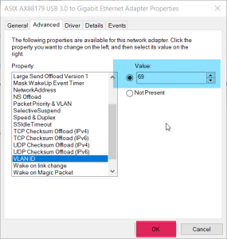

How to trigger offline calibration by diagnose signal on bench
Step1: File and Python Environment
Doip Python Tool Address: \\ bosch.com\dfsrb\DfsCN\DIV\XC\Engineering\domain\WAVE3\00_DataExchange\VER2PER\15_EOL_calibration\1_tools\Doip-python\Doip-python
operate reference document address: \\ bosch.com\dfsrb\DfsCN\DIV\XC\Engineering\domain\WAVE3\00_DataExchange\VER2PER\15_EOL_calibration\1_tools\Guideline_demo.docx
2. Copy doip-python to the local directory, and then in the terminal PIP Install ColorLog
Step2: Open the instrument and set the IP and VLAN ID
Connect the power-> open the instrument-> connect network cable Note: After the power is restarted to wait for the voltage to be completely 0, wait for ten seconds before re -powering and power. You need to wait for the current to stabilize the current above 5A (specifically depends on the voltage set)
Control panel-> Change Advanced Sharing Settings-> Ethernet5 (maybe Ethernet4) right-click Properties
3. Click Configure in the network column, modify VLAIN ID to 69, click OK

4. Then click the Internet Protocol Version4 (TCP/IPv4) of the network column, set the fixed IP IP address to 192.168.69.100 subnet mask to 255.255.255.0 and click OK (OK of the two panels)

Step3: Running program
Terminal CD to the Generic directory under Doip-Python, enter Python. \ Doipteter.py Enter. The terminal prints as follows.
2. To Input Diag Request Enter the Instrument (from top to bottom) in the table to observe Response
|
operate |
instruction |
response |
|
Extended session |
1003 |
5003 |
|
Safety visit SA |
2701 |
6701 |
|
Safety visit SA |
2702FFFFFFFFFFFFFFFFFFFFFFFFFFFFFFFF |
6702 |
|
Start the standard |
3101408127FF01 |
7101408127ff0100 (If the last two are 01, it is a failure) |
|
Read the calibration result |
31034081 |
|
Taking 1003 as an example, the top four of the response result are 5003, indicating that the response is successful
How to modify the diagnosis of Instrument and simulate the code of different models
1. Send 1003
2. Send 22F011 to read the current vehicle configuration (900 bytes followed by 62F011)
3. Send 2701 → 2702FFFFFFFFFFFFFFFFFFFFFFFFFFFFFFFF Unlock
4. Modify the vehicle configuration word through 2EF011 ****** (modify the 47th "FF (based on actual reading)" to 00 (E03)/ 01 (E0Y)/ 02 (EH3))
2ef011FFFFFFFFFFFFFFFFFFFFFFFFFFFFFFFFFFFFFFFFFFFFFFFFFFFFFFFFFFFFFFFFFFFFFFFFFFFFFFFFFFFFFFFFFFFF01FFFFFFFFFFFFFFFFFFFFFFFFFFFFFFFFFFFFFFFFFFFFFFFFFFFFFFFFFFFFFFFFFFFFFFFFFFFFFFFFFFFFFFFFFFFFFFFFFFFFFFFFFFFFFFFFFFFFFFFFFFFFFFFFFFFFFFFFFFFFFFFFFFFFFFFFFFFFFFFFFFFFFFFFFFFFFFFFFFFFFFFFFFFFFFFFFFFFFFFFFFFFFFFFFFFFFFFFFFFFFFFFFFFFFFFFFFFFFFFFFFFFFFFFFFFFFFFFFFFFFFFFFFFFFFFFFFFFFFFFFFFFFFFFFFFFFFFFFFFFFFFFFFFFFFFFFFFFFFFFFFFFFFFFFFFFFFFFFFFFFFFFFFFFFFFFFFFFFFFFFFFFFFFFFFFFFFFFFFFFFFFFFFFFFFFFFFFFFFFFFFFFFFFFFFFFFFFFFFFFFFFFFFFFFFFFFFFFFFFFFFFFFFFFFFFFFFFFFFFFFFFFFFFFFFFFFFFFFFFFFFFFFFFFFFFFFFFFFFFFFFFFFFFFFFFFFFFFFFFFFFFFFFFFFFFFFFFFFFFFFFFFFFFFFFFFFFFFFFFFFFFFFFFFFFFFFFFFFFFFFFFFFFFFFFFFFFFFFFFFFFFFFFFFFFFFFFFFFFFFFFFFFFFFFFFFFFFFFFFFFFFFFFFFFFFFFFFFFFFFFFFFFFFFFFFFFFFFFFFFFFFFFFFFFFFFFFFFFFFFFFFFFFFFFFFFFFFFFFFFFFFFFFFFFFFFFFFFFFFFFFFFFFFFFFFFFFFFFFFFFFFFFFFFFFFFFFFFFFFFFFFFFFFFFFFFFFFFFFFFFFFFFFFFFFFFFFFFFFFFFFFFFFFFFFFFFFFFFFFFFFFFFFFFFFFFFFFFFFFFFFFFFFFFFFFFFFFFFFFFFFFFFFFFFFFFFFFFFFFFFFFFFFFFFFFFFFFFFFFFFFFFFFFFFFFFFFFFFFFFFFFFFFFFFFFFFFFFFFFFFFFFFFFFFFFFFFFFFFFFFFFFFFFFFFFFFFFFFFFFFFFFFFFFFFFFFFFFFFFFFFFFFFFFFFFFFFFFFFFFFFFFFFFFFFFFFFFFFFFFFFFFFFFFFFFFFFFFFFFFFFFFFFFFFFFFFFFFFFFFFFFFFFFFFFFFFFFFFFFFFFFFFFFFFFFFFFFFFFFFFFFFFFFFFFFFFFFFFFFFFFFFFFFFFFFFFFFFFFFFFFFFFFFFFFFFFFFFFFFFFFFFFFFFFFFFFFFFFFFFFFFFFFFFFFFFFFFFFFFFFFFFFFFFFFFFFFFFFFFFFFFFFFFFFFFFFFFFFFFFFFFFFFFFFFFFFFFFFFFFFFFFFFFFFFFFFFFFFFFFFFFFFFFFFFFFFFFFFFFFFFFFFFFFFFFFFFFFFFFFFFFFFFFFFFFFFFFFFFFFFFFFFFFFFFFFFFFFFFFFFFFFFFFFFFFFFFFFFFFFFFFFFFFFFFFFFFFFFFFFFFFFFFFFFFFFFFFFFFFFFFFFFFFFFFFFFFFFFFFFFFFFFFFFFFFFFFFFFFFFFFFFFFFFFFFFFFFFFFFFFFFFFFFFFFFFFFFFFFFFFFFFFFFFFFFFFFFFFFFFFFFFFFFFFFFFFFFFFFFFFFFFFFFFFFFFFFFFFFFFFFFFFFFFFFFFFFFFFFFFFFFFFFFFFFFFFFFFFFFFFFFFFFFFFFFFFFFFFFFFFFFFFFFFFFFFFFFFFFFFFFFFFFFFFFFFFFFFFFFFFFFFFF
5. Wait a few seconds to restart the electricity to make the modification take effect
6. Send 1003 → 22F011 Reading the 47 -digit model code in the vehicle configuration.